最近想去澳洲旅遊，帶父母一起，一家6口人，因為父母稍微上了歲數，想走輕鬆一些的路線，求詳細的自由行攻略，怎麼玩比較好？
網友最新評論()
-
上週我們一家剛從澳洲旅遊回來，我精簡的分享下親身經歷，如果能抽出幾分鐘耐心看完我這篇文章，一定會讓你去澳洲旅遊少走彎路!
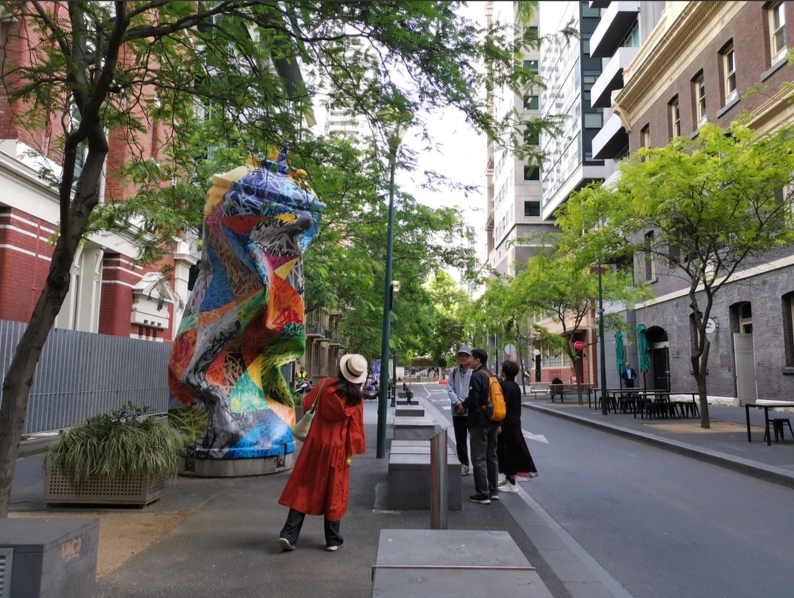
這次是帶着父母一起去的澳洲，完成了期待已久的全家澳洲之行。
我們一家人從新加坡樟宜機場乘坐新加坡航空，直飛到達雪梨機場，機票非常便宜，飛行時間3.5小時左右
澳洲最大的國際空港在雪梨，並不是首都坎培拉。
一、去澳洲最佳旅遊方式：自由行。
現在去澳洲自由行的人越來越多，也是目前主流旅遊方式。
因為考慮到父母的身體，不太適合走太趕的旅遊團，我們一家人選擇了包車自由行，對比了下跟團遊的費用，沒什麼太大的價格差距，我們果斷選擇包車，方便我們出行。
包車自由行出行靈活，沒有各種限制，可以更好的融入到當地生活中，全方位瞭解本地人的文化，深入體驗異國風情，這樣的旅行才是我們想要的旅行，所以建議大家去澳洲遊玩選擇自由行。
避坑提醒一：
1、出機場拉客的很多，小心上當受騙。
2、有的酒店前台服務員也在拉客，小心被騙。
有朋友去澳洲自由行，途中遇到拉客的，報的價格很低，承諾的服務也很好，結果第二天跟團就被坑慘了。奉勸大家還是要找當地口碑好的旅遊公司和導遊來安排，穩妥一些。
飛機到達雪梨機場，當地華人導遊小劉安排的包車已經在機場等候，我們愉快的開啓了澳洲度假模式。
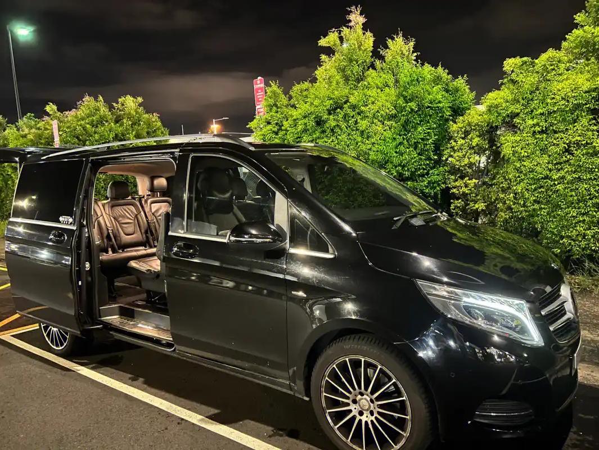
二、關於澳洲旅遊簽證
澳洲對大部分國家實行免籤或者落地籤，辦理簽證沒什麼障礙。
對持有中國護照的遊客免籤。我父母來新加坡探親，持中國護照。所以，很穩妥的入境澳洲，沒有一絲阻礙。
三、關於澳洲旅遊入境政策要求
澳洲入境，需要提前辦理簽證，並準備好有效護照、簽證確認信、回程機票等文件，在這我推薦找小劉，他預定的酒店不僅價格實惠，基本都處於市中心CBD地段，出行便利，很符合我們全家出行的需求，下面是我入住酒店的照片。
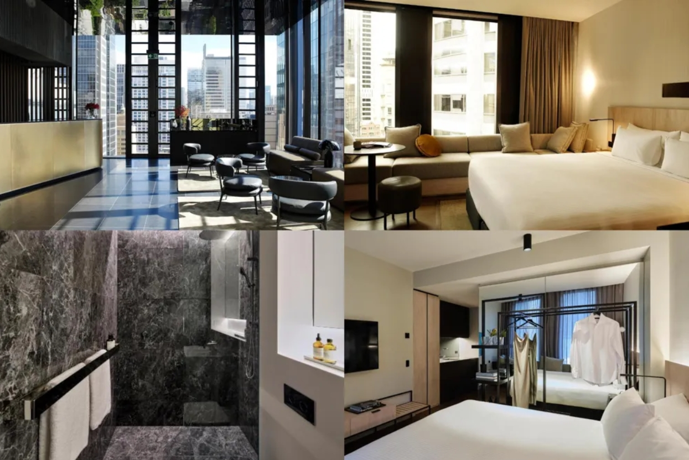
四、我為什麼選擇去澳洲，愛上它的理由
愛上澳洲，理由藏在每一處細節裏。保存完好的老建築讓你能親手觸摸到開拓年代的印記，彷彿時光在磚石間低語，過去的故事活了過來。轉身遇見曠野，紅石頭在夕陽下會變紅，海浪拍着礁石像在哼歌，風裏都是自由的味道。
被賦予古老傳説的神奇地貌，在自然力量的雕琢下展現出令人敬畏的形態，每一次日出日落都充滿靈魂的震撼。
路邊可能蹦出袋鼠，樹上掛着打盹的考拉，它們不怕人，像這片土地的小主人。
這麼撩人的國度，不去一下太遺憾了!
五、澳洲自由行線路的設計和推薦：
我對澳洲的旅遊定義為體驗式和享受性旅遊，全程適合乘坐舒適性商務車出行，合理的出遊時間最好為8天。。
小劉為我們安排的是，澳洲雪梨，墨爾本雙城深度8日遊
第1天：到達澳洲雪梨
第2天：海關大樓-雪梨歌劇院---雪梨市區歷史文化探尋之旅
第3天：雪梨小眾遊覽-Taronga Zoo-水上與自然野趣探索之旅
第4天：雪梨-墨爾本
第5天：墨爾本市區遊覽-墨爾本城市文化與歷史風情探尋之旅
第6天至第7天：墨爾本最美公路——大洋路 大洋路海岸風光之旅
第8天：行程圓滿結束，離開澳洲
六、對澳洲網紅景點和城市的印象
1、雪梨歌剧院Sydney Opera House
雪梨歌劇院跟港灣大橋就在旁邊，是雪梨當地最有名的兩大地標，基本上來雪梨「沒去這邊拍照不算有來過」～雪梨歌劇院是一座建築奇觀，以其獨特的帆船形狀聞名於世。它是世界上最著名的歌劇院之一，如果你想要深入瞭解雪梨歌劇院，「雪梨歌劇院一小時的導覽」絕對要報名，讓你更能瞭解其背後設計建造的歷史，也會帶你參觀歌劇院內部的廳院，進入歌劇院一般人不會看到的角度欣賞雪梨大橋，連小孩子都能夠收穫滿滿的體驗。
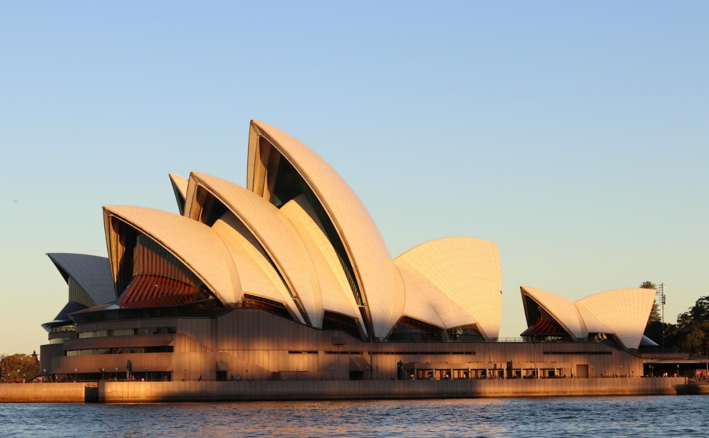
2、維多利雅女王大廈(Queensland Victory Building)
簡稱QVB，建於19世紀末，最初作為一個市場和城市交易所，這棟百貨Shopping Mall是Mina推薦來雪梨必去的一間，最主要一定要來拍照，非常具有羅馬式建築風格，外觀華麗，內部裝潢精美，到整點的時候百貨中心的時鐘還會報時，一定要去看看，在這棟建築中欣賞到復古的設計、拱形天花板、樓梯和鐘塔，感受到澳洲的歷史和文化。
推薦景點：澳洲博物館、聖瑪利亞大教堂、新南威爾士美術館、雪梨大學等。
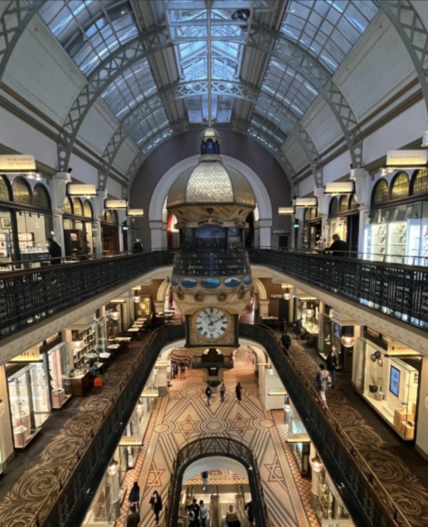
3、岩石區The Rocks
The Rocks Market和The Rocks Square是雪梨歷史最悠久的地區之一，也是Mina個人很喜歡的觀光區域，大家稱這裏為「岩石區」，擁有豐富的文化遺產、藝術和手工藝品市集，跟雪梨歌劇院和港城大橋很近，推薦可以安排在同一天觀光。
推薦景點：岩石區發現博物館
4、Taronga Zoo—塔龍加動物園
Taronga Zoo是雪梨歷史最悠久的動物園，以其壯觀的海港景色和多樣化的動物種類而聞名，澳洲特有的動物，如最知名的：袋鼠、無尾熊、袋熊、袋獾、鴨嘴獸、長頸鹿等。千里迢迢來到澳洲一趟，別錯過了近距離欣賞這些可愛有袋類動物的機會。而且Taronga Zoo的位置是絕佳的拍照打卡的聖地。
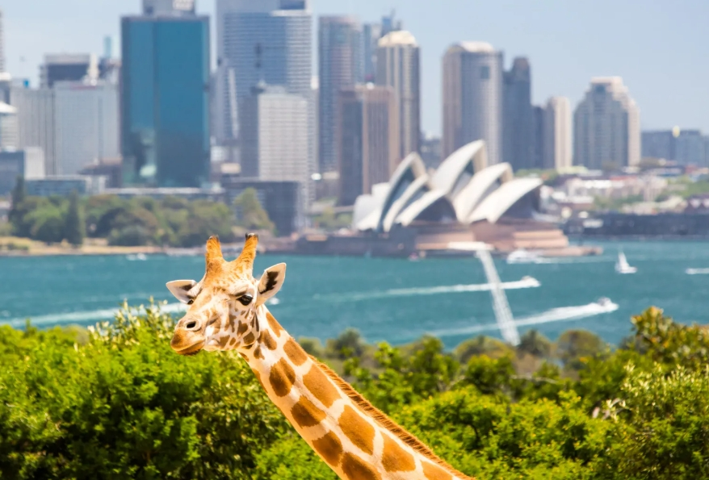
5、雅拉河谷熱氣球Yarra Valley
澳洲三大葡萄酒產區之一就在墨爾本的亞拉河谷，距離墨爾本CBD 僅1 小時的距離，這裏就像一個天然的露天圓形劇場。 如果你是平時走來墨爾本這個大城市已經可以感受到田野加上文藝氣息，再加上日出前出發，從高空感受晨曦霧氣讓景色更夢幻，南半球緯度最高的熱氣球搭乘處，那這裏絕對沒錯。
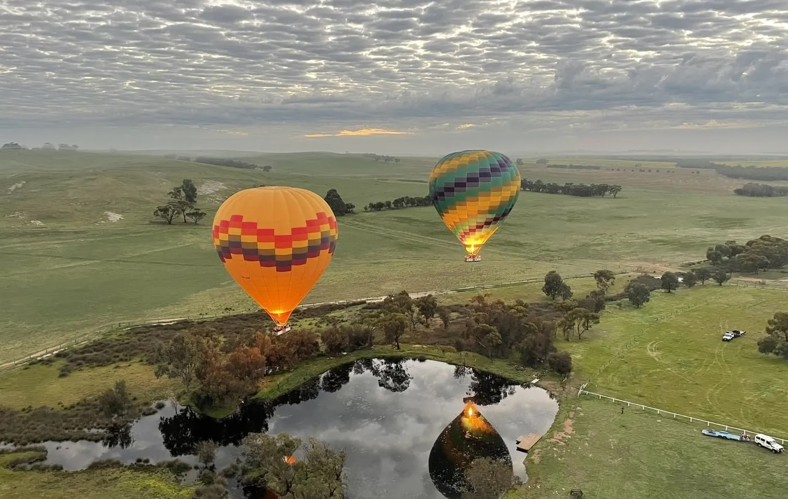
6、墨爾本塗鴉牆Hosier Lane
墨爾本以其街頭藝術聞名，Hosier Lane 更是其中一個代表，這條巷子上布滿了來自當地和世界各地藝術家的塗鴉作品，每幅畫背後都有一個故事。遊客們喜歡來這裏拍照，感受這股藝術氣息。
推薦景點：維多利亞州立圖書館、墨爾本市政廳、舊國會大廈、墨爾本大學（The University of Melbourne）、維多利亞女皇市場、墨爾本市政廳等
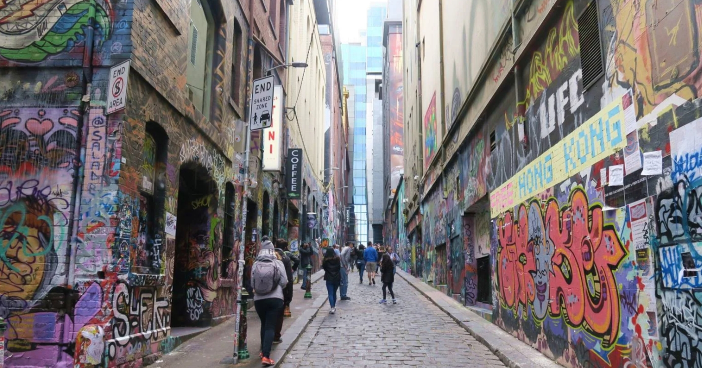
7、大洋路(The Great Ocean Road)
墨爾本的「大洋路(The Great Ocean Road)」號稱世上最美公路之一,是許多來到澳洲的觀光客必玩的景點，沿途壯觀的地形、海岸美景、特色小鎮等，都是大洋路的旅遊亮點。

8、【阿波羅灣】阿波羅灣（Apollo Bay）
是維多利亞州著名的大洋路（ Great Ocean Road）上的小鎮，阿波羅灣（Apollo Bay）是澳洲維多利亞州西南岸海港，是著名世界十大沖浪勝地——貝爾斯海灘的終點。阿波羅灣是大洋路中點，充滿了原始風情。海岸邊有美麗的瀉湖景觀，堪稱大洋路沿岸瀉湖之最。這裏有在蘆葦叢中漫步的各種海鳥，有美麗高貴的白天鵝、黑天鵝。這裏是藝術愛好者和攝影愛好者進行寫生和取景拍攝的好地方。
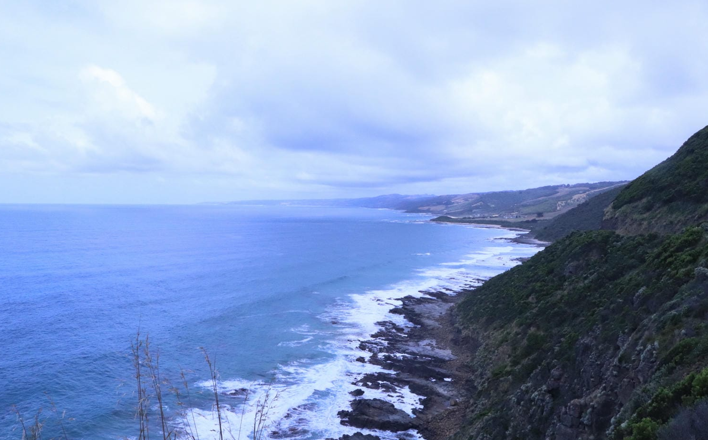
十二使徒岩 (The Twelve Apostles)
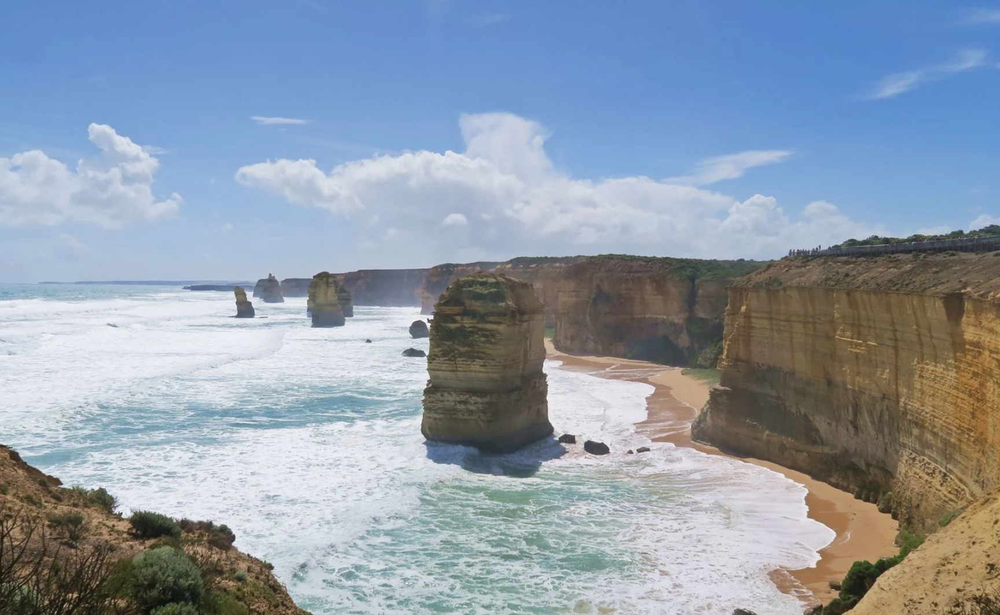
阿德湖峽 (Loch Ard Gorge)
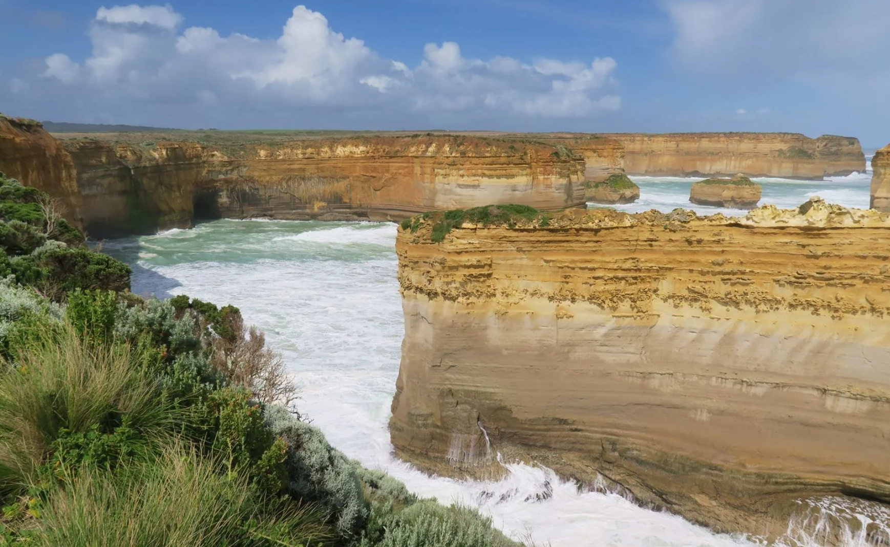
倫敦拱橋（London Bridge）
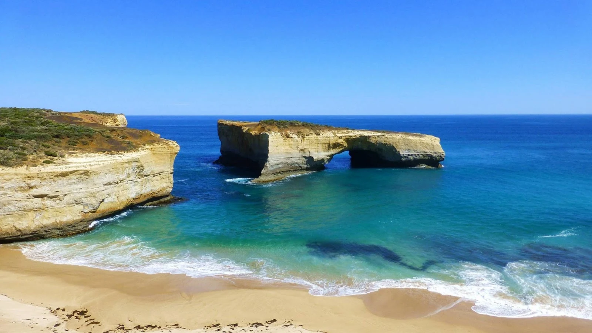
此次澳洲之行，必須感謝小劉，為我們提供了很大的幫助,細心熱情的服務，讓全程旅行不用操太多的心，保證了我們度假圓滿結束，再給小劉打個廣告，點擊這裏聯繫他，有需要的朋友，請聯繫他。
@新加坡·劉美玲 可以給一下小劉的聯繫方式嗎？最近我們也計劃去澳洲玩一下。新加坡·劉美玲回覆
@加拿大-林小惠 小劉的微信號 Autrip666,WhatsApp號 + 61 493 385 079
加拿大·林小惠回覆
@新加坡·劉美玲 微信已加，比網上查詢旅遊攻略方便了很多，謝謝分享。
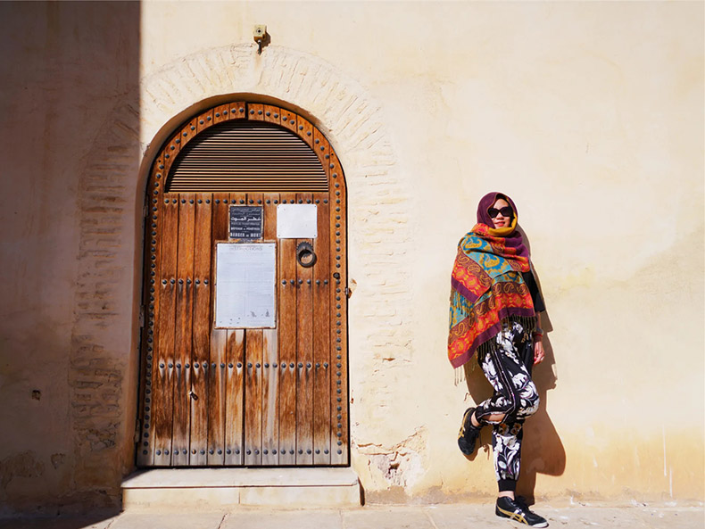英國·李玉青評論
我之前去澳洲的時候找的就是嚮導小劉，高端定製遊，花錢還不多。
諮詢的時候就給我留下了很好的印象，到達澳洲後，細節方面，都會有負責人囑咐，在國外旅遊，有個華人導遊照顧真的是很省心，一次旅行讓你感受到很多種不同的體驗。

馬來西亞·陳宇櫻評論
謝謝你有用的推薦，參加小劉的10天團已經回家了，品質過硬，服務到位!
新加坡·李春雪評論
非常感謝小劉給我們全家人提供的優質服務，陪伴家人、孩子出來旅遊一趟，機會非常難得，澳洲真值得一去。
我們採納了小劉的建議：小車團自由行，一家人單獨一台車，私密性強，非常安全。
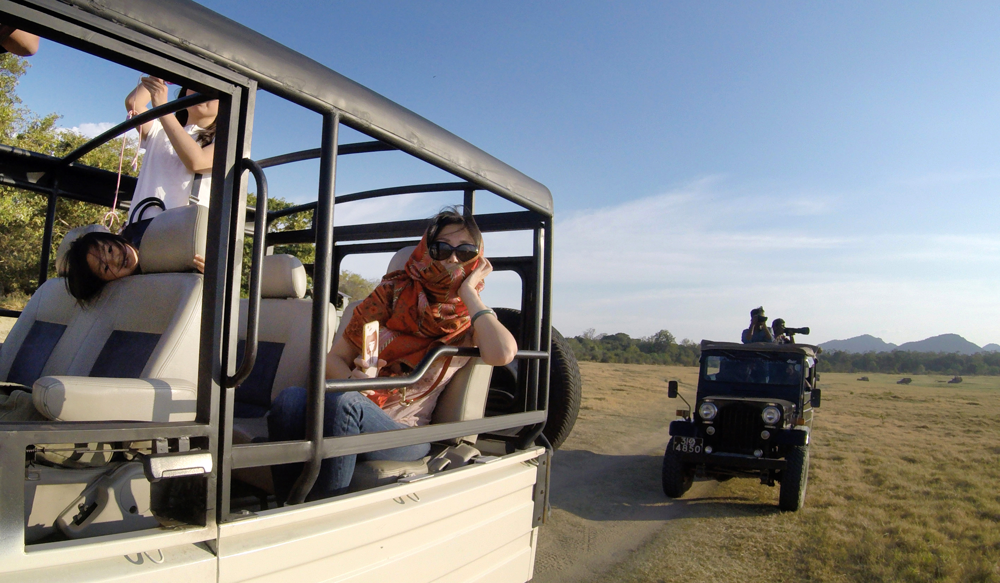
-
蜜月旅行圓滿收官啦，隨性地敲定了去澳洲，現在回味起來依舊覺得妙不可言。從前總以為南半球的國度遙遠又神秘，直到雙腳真正踏上這片土地，才發現所有想象都被溫柔推翻。目之所及是無邊無際的蔚藍海岸線，金黃的沙灘與碧綠的海浪纏綿相擁，內陸的紅土高原上，巨大的岩石在陽光下泛着奇異的光澤。 雪梨歌劇院的白色貝殼頂在海風中輕輕 “呼吸”，凱恩斯的大堡礁像打翻了的調色盤，各色珊瑚在透明海水裏招搖。清晨在布里斯班的公園偶遇蹦跳的袋鼠，午後在墨爾本的咖啡館看街頭藝人拉琴，連路邊慵懶曬着太陽的考拉都透着股悠閒勁兒。住過的每間民宿都有主人精心佈置的小細節，吃到的海鮮燴飯裏滿是陽光的味道。
很幸運的選擇了澳洲，也很幸運遇見了小劉，非常感謝他給我們提供的優質服務，讓我們幸福滿滿，一次難忘的旅程。
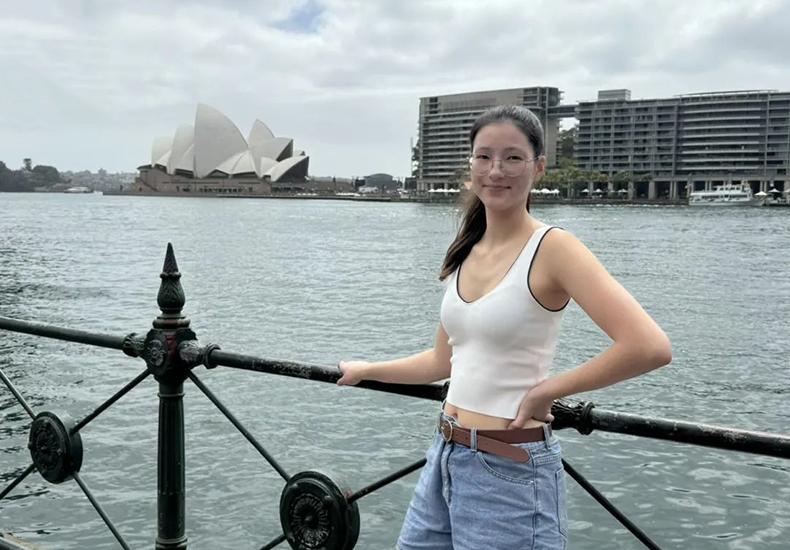

新加坡·阿飛提問
@加拿大·李潔 可以多分享一些澳洲旅遊攻略嗎?計劃下個月過去蜜月度假。

加拿大·李潔回覆
@新加坡·阿飛詳細的澳洲旅遊攻略，我建議還是聯繫嚮導小劉，我也是找人家安排的，畢竟人家專業，能給到你詳細的旅遊規劃和報價，這樣來的比較直接一些。
小劉的微信號 Autrip666,WhatsApp號 + 61 493 385 079
加拿大·張欣羽評論
當你真正走在澳洲的街頭，會發現到處都是抱着衝浪板的陽光少年，金髮碧眼的姑娘穿着夾腳拖慢跑，亞洲面孔的店主在街角賣着改良版肉派，你會恍惚自己究竟是在歐美小鎮，還是東南亞島嶼。因為多元文化的融合，這裏的人們既有西方的熱情直接，又帶着東方的溫和友善。雖然街頭的袋鼠偶爾會 “搶” 遊客的零食，可它們蹦跳着跑遠的樣子實在讓人忍俊不禁，考拉趴在樹上慢吞吞啃桉樹葉的模樣，更是治癒了所有壞情緒。
無論是在珀斯的國王公園俯瞰全城，還是在塔斯馬尼亞的荒原裏遇見極光，當地人總會笑着對你説 “G'day”，那份不加掩飾的熱情，像這裏的陽光一樣溫暖明亮。
英國·張義評論
這次的領隊小劉，熱愛自己的事業，熟知澳洲的風土人情，工作責任心強，關心團友。
澳洲的行程雖然已圓滿結束，然而我卻又有再次前往的期待。
雪梨港的白帆與歌劇院的貝殼頂相映成趣，邦迪海灘的浪花捲着雪白的泡沫親吻沙灘；墨爾本的塗鴉巷弄裏，街頭藝術家用色彩在磚牆上繪製着天馬行空的夢境；塔斯馬尼亞的荒原是黛青色的，冰川融水匯成的湖泊像鑲嵌在大地上的藍寶石。
從東海岸的碧海金沙到內陸的紅色荒原，從南澳的葡萄園到北領地的峽谷，每個角落都像被大自然精心調配過色彩，行走其間，彷彿掉進了一幅不斷展開的油畫裏，隨手一拍都是電影級的畫面。
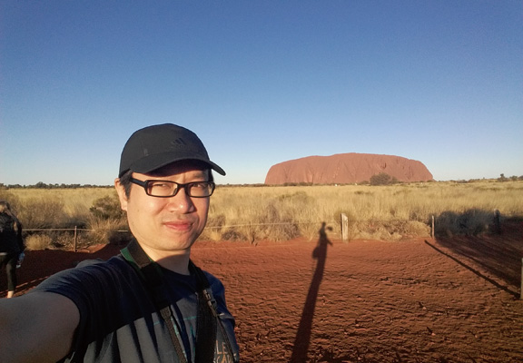
-
我是帶着爸媽和爺爺去的，跟小劉報的自由行團。因考慮到老人的身體，不敢把行程填太滿和太趕，所以這次報的這個團行程比較慢，全程都比較輕鬆。
線路設計非常合理，爺爺一點感覺不到累，很符合中老年人出行，吃住方面都非常好。
找個澳洲當地的負責人為你設計路線，真的是很接地氣。
小劉的微信號 Autrip666,WhatsApp號 + 61 493 385 079
馬來西亞·付小小評論
剛剛加上小劉的聯繫方式，開啓我們的澳洲之旅...
馬來西亞·張澤坤評論
這次我們參加了澳洲之旅，很幸運地遇到了小劉。
我們老兩口年紀比較大，也比較笨，在整個行程中，他每天都會主動關心我們，問候我們有沒有需要幫忙的地方。對我們老年遊客照顧有加，使我們身在異鄉卻感受到了感到很溫暖，真可謂，不是親人勝似親人!
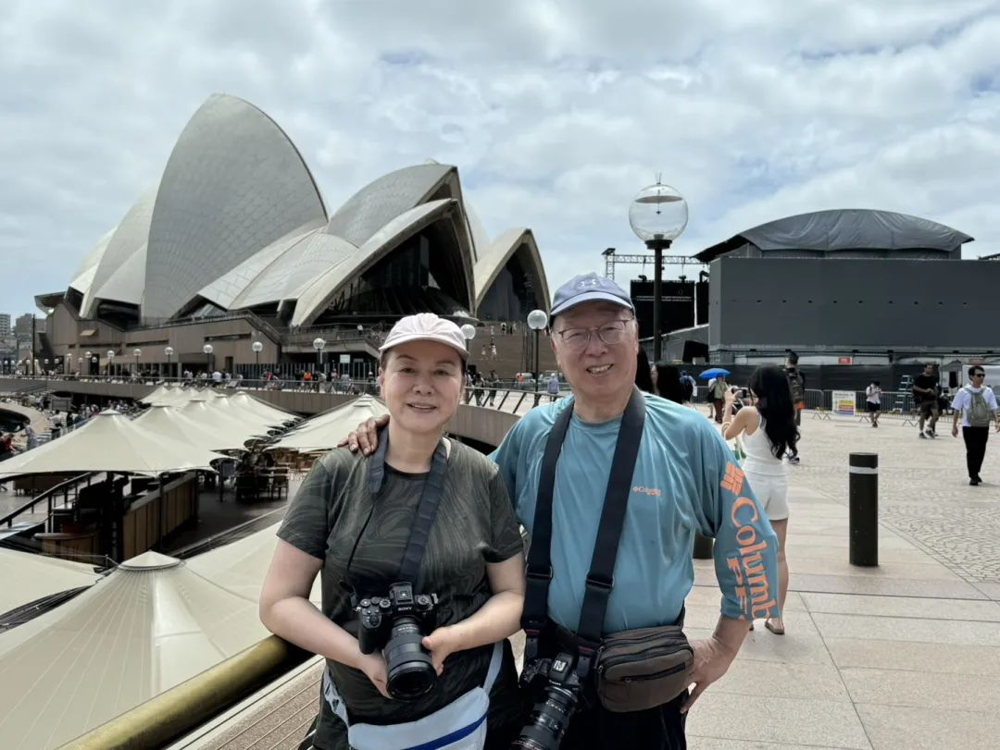
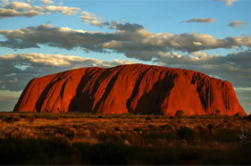
澳洲旅遊-定製師推薦
微信號：
Autrip666